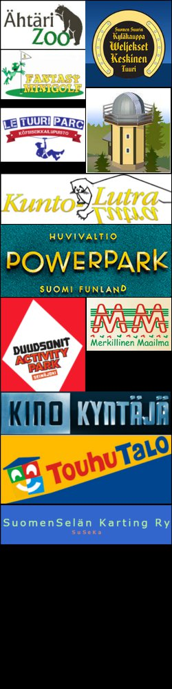

Menovinkit
Tuurin alueella sekä lähi- ja ympäristökuntien menovinkkejä. Suluissa oleva matka on etäisyys Koski-Tuurin Kammareista.
Kyläkauppa Veljekset Keskinen
Onnentie 7, Tuuri
(2km)
Köysiseikkailupuisto Le Tuuri Parc
Alavudentie 610, Tuuri
(2,2km)
LabyrinttiMaailma
Onnelantie 30, Tuuri
(3,5km)
Ähtärin eläinpuisto
Karhunkierros 150, Ähtäri
(29km)
Kuntolutra uimahalli
Kautunkuja 5, Alavus
(8,5km)
Töysän museo
Niemenkyläntie 250, Töysä
(10km)
Apteekkimuseo
Asematie 1, Tuuri
(1,6km)
Fantasy minigolf
Siltalantie 10, Tuuri
(2,4km)
SuomenSelän Karting
Housunkyläntie 200, Töysä
(5,8km)
Tähtitorni Pegasus
Lintukalliontie 101, Töysä
(9km)
Duudsonit Acivity Park
Yrittäjäntie 8, Seinäjoki
(56km)
Elokuvateatteri Kino Kyntäjä
Järviluomantie 5, Alavus
(8,2km)
Touhutalo
Kaarretie 2, Seinäjoki
(58km)
PowerPark
Puistotie 3, Härmä
(98km)

Varaaminen
Soita ja varaa majoitus:
Mob. 040-8497914
(Ma-Su 8:00-21:00)
Kaarina Koski-Tuuri
Tuurinkyläntie 101
63610 Tuuri
Saapumispäivänä ilmoittautuminen
viimeistään klo 17:00.
Ilmoitattehan jos aiotte peruuttaa varauksenne.
